The Jyros Method
Built from the Cuban Conservatory System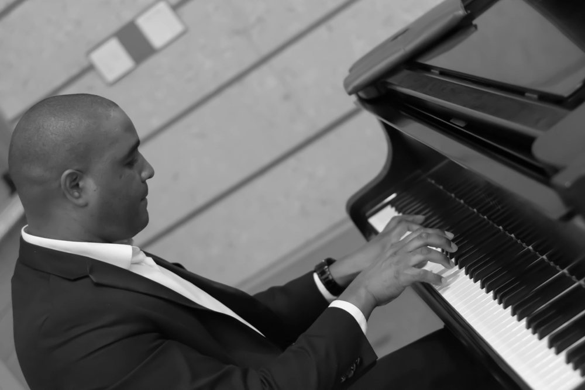
On the piano, melody and harmony live in your own two hands.
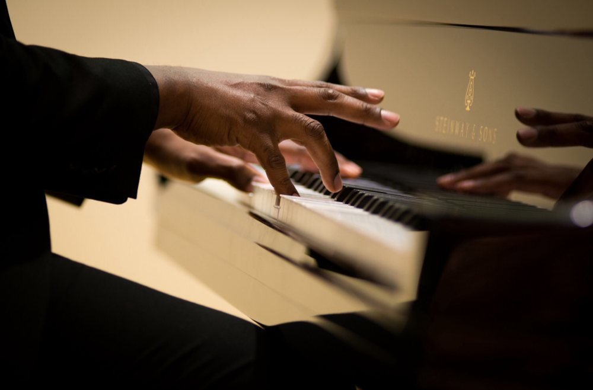
Studies link music lessons with stronger listening, reading and math skills.
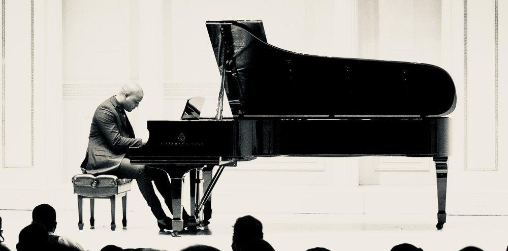
A few minutes at the keys can calm the mind and lift your mood.
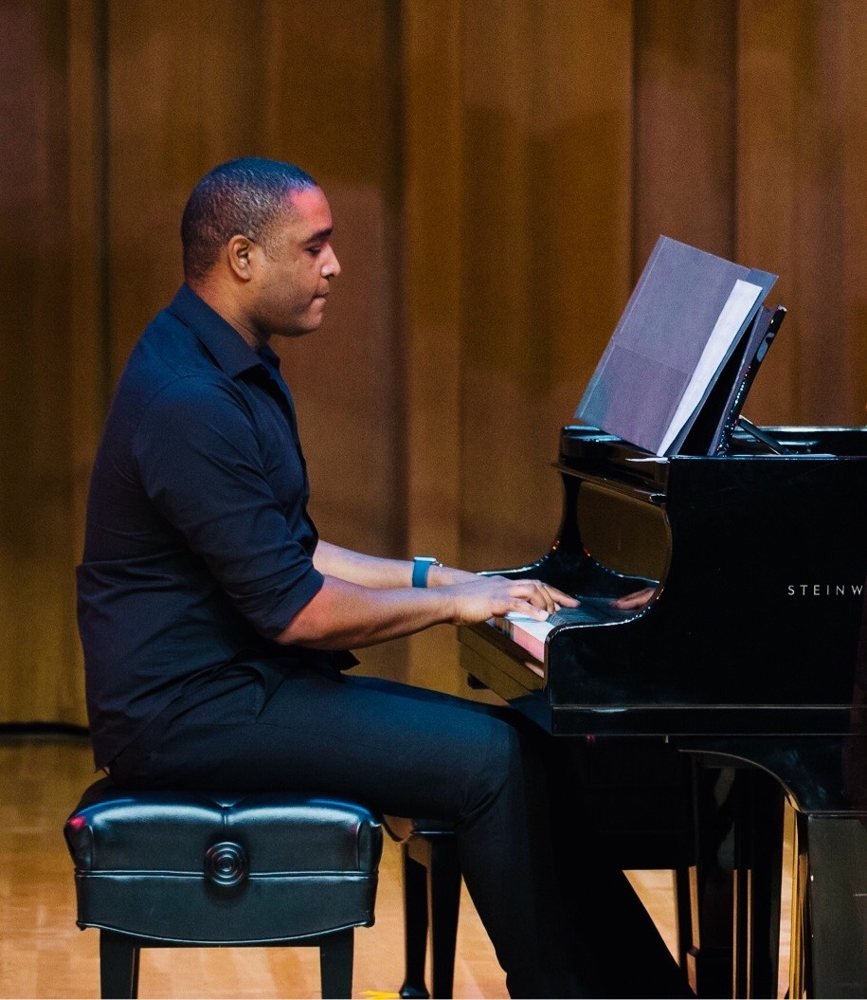
Reading music teaches your brain to think ahead, a skill for life.
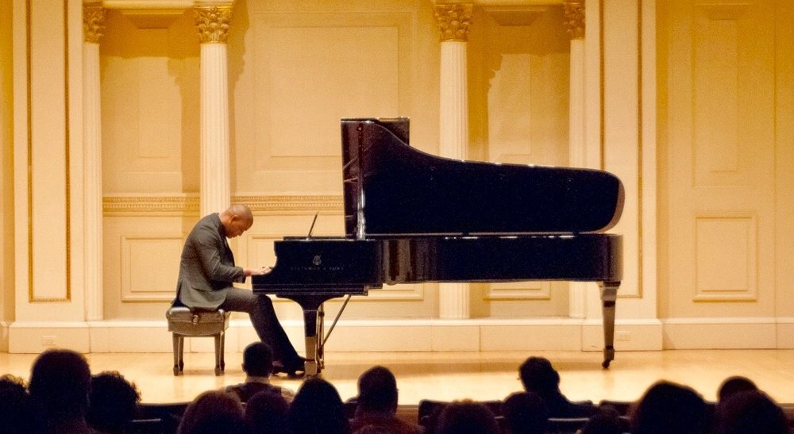
Every piece you learn builds patience, discipline and confidence.
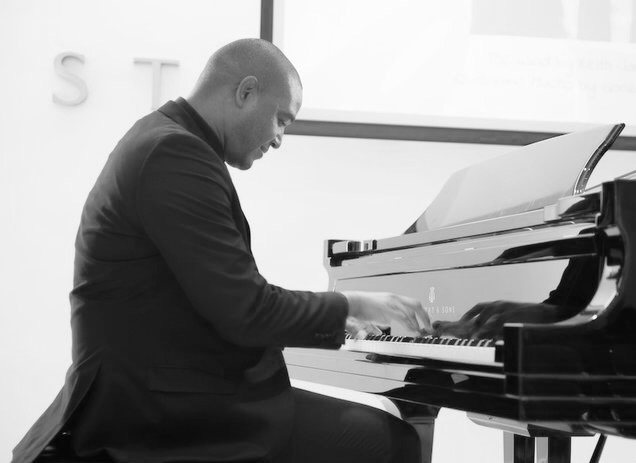
The piano opens the door to every style, from Bach to bolero to jazz.
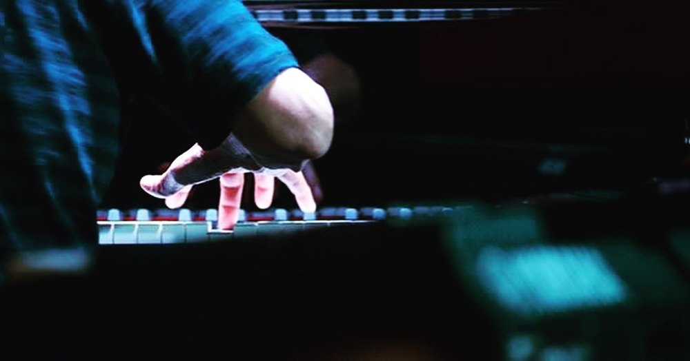
It's never too late: learning piano keeps the mind active at any age.
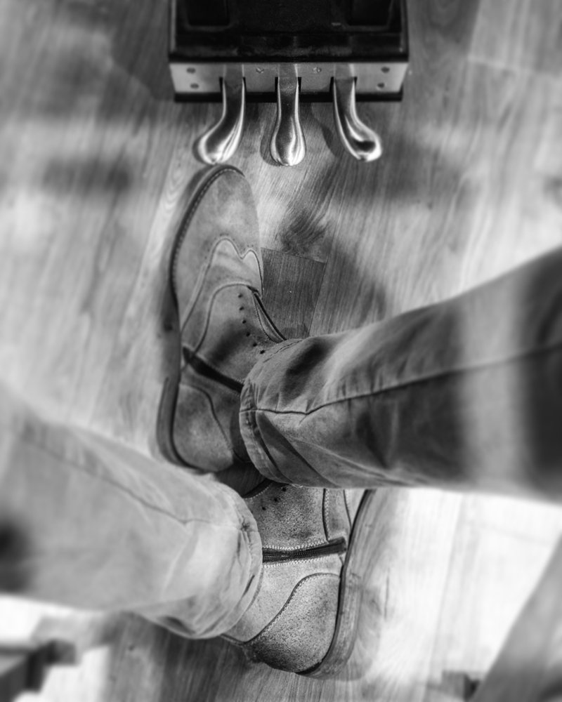
One day you'll play the song you love for the people you love.
There are no shortcuts to meaningful musical development.
The grammar of the language of music
I emphasize a deep understanding of music theory. Just as grammar provides the foundation for reading, writing, and communicating effectively, a strong understanding of music theory enables students to read, interpret, and perform music with greater confidence, independence, and understanding.
Control that sets expression free
A solid technical foundation gives students the control, coordination, and discipline necessary to translate musical ideas into artistic expression and to progress toward increasingly advanced levels of performance. Technique is not an end in itself, but rather a means through which students can express themselves freely and effectively.
Each stage builds on the last
Repertoire is carefully selected according to the student's level, abilities, and developmental needs. Students are not rushed through stages or encouraged to skip essential elements of their training. They develop steadily through a carefully sequenced progression that prepares them for the challenges of the next level.
When combined with consistent and purposeful practice, a strong foundation in music theory, solid technical training, and a structured progression allow students to develop the knowledge, discipline, confidence, and skills necessary to reach their full potential.
About your instructor
Yaymel Jorva McCatty
Senior Piano Instructor & Music EducatorMore than 30 years of professional teaching and performance experience. Classically trained from the age of four in Havana, Cuba, with advanced expertise in piano pedagogy, music theory, jazz harmony, Latin styles, and contemporary repertoire.
Extensive experience instructing beginners of all ages through advanced levels, with a strong record of long-term student development, technique refinement, repertoire planning, and performance preparation, in an inspiring environment where every piano lover can reach their fullest potential.
- Steinway & SonsEducational partner
- Musical and Creative DirectorArranger and composer
- TrilingualEnglish – Spanish – French
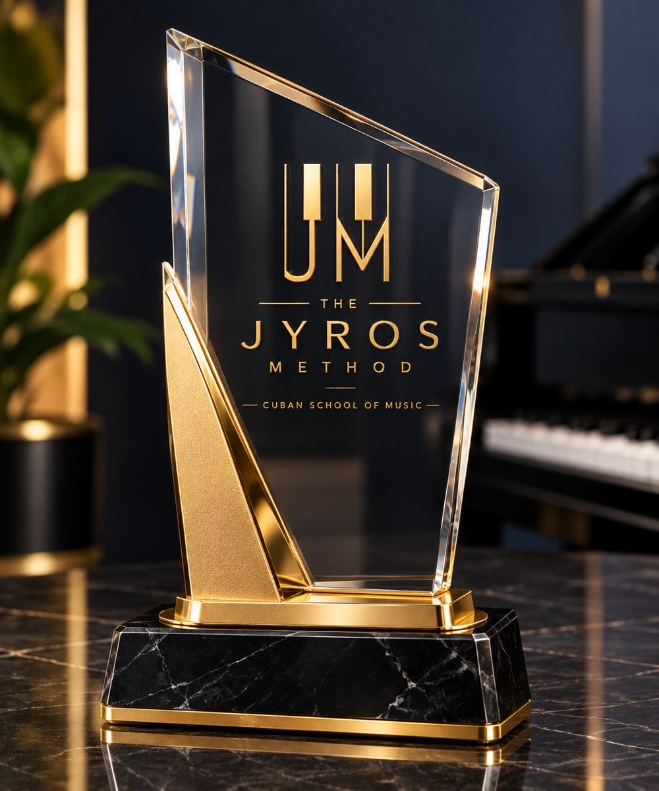
The Cuban Conservatory Method
- Rooted in Cuba
- Having received rigorous classical training from an early age in Cuba, where European and Russian pedagogical standards were an integral part of the classical tradition, I experienced firsthand the results that a disciplined, methodical approach can produce. This training shaped not only my musicianship but also my understanding of how students develop and what is required to build lasting technical and musical abilities.
- For today's student
- While remaining grounded in the discipline and high standards of traditional classical training, I adapt my methodology to the needs, learning styles, and realities of today's students. My goal is to preserve the depth and rigor of a strong musical education while creating an environment in which students can develop with confidence, purpose, and a genuine understanding of their craft.
The tradition I come from
Legends from my hometown of Guanabacoa, whose legacy helped shape the history of Cuban music and culture, from concert halls to popular music and street celebrations, and who carried it to audiences around the world.
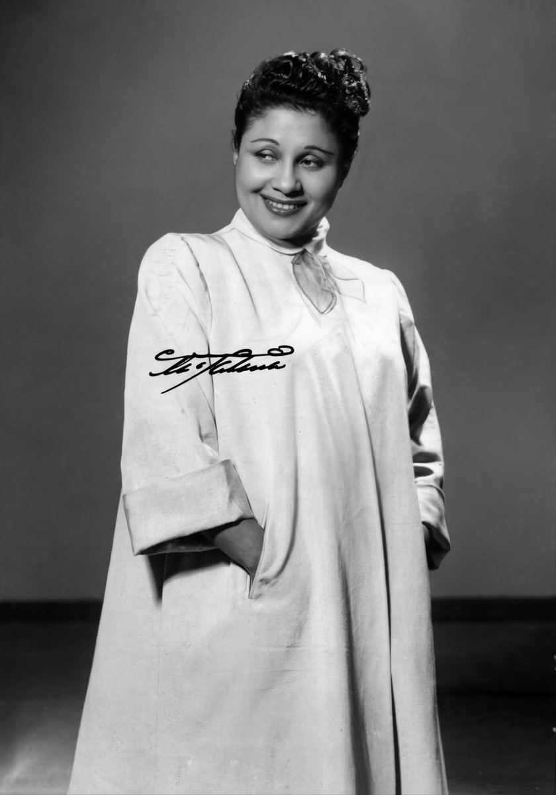
Born in GuanabacoaRita MontanerSinger, pianist and actress, and one of Cuba’s first great stars, known as “La Única.”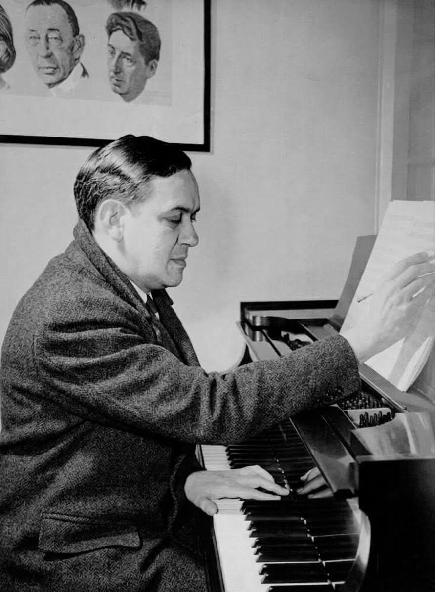
Born in GuanabacoaErnesto LecuonaPianist and composer, Cuba’s most celebrated, the author of “Malagueña” and the Suite Andalucía.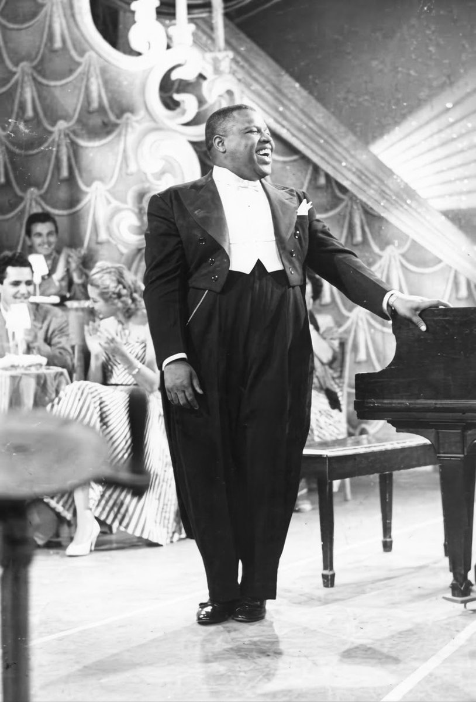
Born in GuanabacoaBola de NieveSinger, pianist and songwriter, famous for his intimate voice-and-piano style. He began as Rita Montaner’s accompanist.Choose your lesson plan
Every plan includes four one-on-one lessons per month. Pick the lesson length that fits the student's level and goals.
- Fundamentals
- Technique
- Deep dive
- Advanced technique
- Core focus
- Personalized plan
+ Option to add an entire additional hour of instruction
- Ultimate progress
- Extended focus
- Deepest study
Pricing available upon requestAll plans are billed monthly and include four weekly lessons. In months with a fifth week, students can add the extra lesson for an additional fee or simply take that week off.
Request pricingGetting started in three steps
Request pricing
Tell me about the student, their experience and goals, and the plan you're interested in.
First lesson & assessment
We meet, play, and I assess the student's level, strengths and what to work on first.
A personal plan
A structured path of repertoire, technique and theory, with performance opportunities along the way.
What students say
Every review is read and approved before it appears here.
No reviews published yet.
Be the first to share your experience with The Jyros Method.Good to know
Who are lessons for?
Children and adults, from complete beginners to advanced pianists and piano lovers, whether preparing for an audition or a performance, or simply looking to improve their skills to play their favorite songs.
Do I need a piano at home?
Consistent, regular practice requires an instrument at the student's disposition. An acoustic piano is ideal; a digital piano with 88 weighted keys is a good alternative.
How much do lessons cost?
Pricing is available upon request. Use the form below and include the lesson plan you're interested in.
Where are lessons held?
Lessons are offered online and in person in the Miami-Dade area. Location details are shared when you enroll.
Why is enrollment limited?
Keeping a small studio means every student gets full attention and a lesson plan built around them. Students are selected after considering a number of factors. Let me know if you'd like to join the current waiting list.
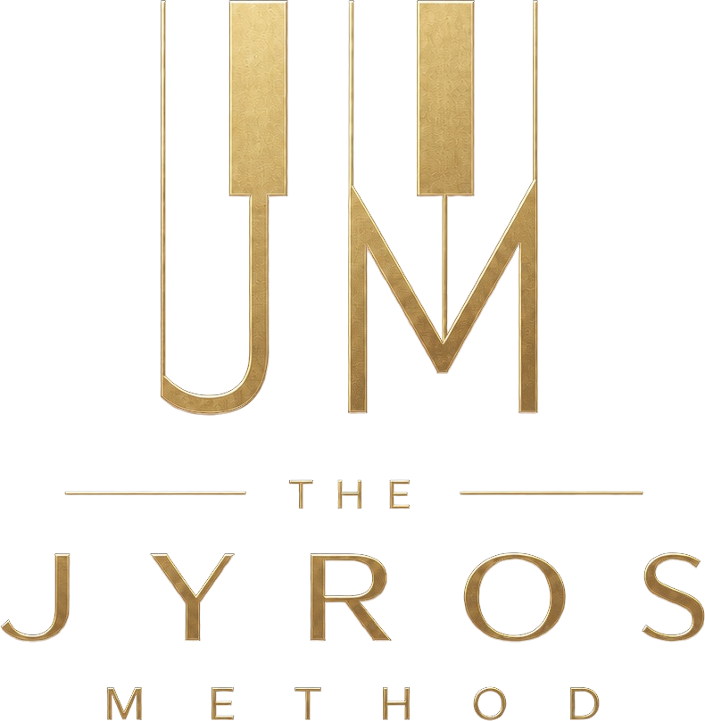
Piano lessons · Miami-Dade · Online & in personGet in touch
Tell me a little about the student and the plan you're interested in, and I'll reply with pricing and available times.